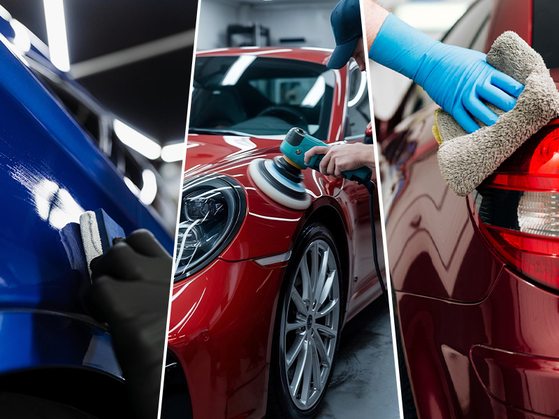
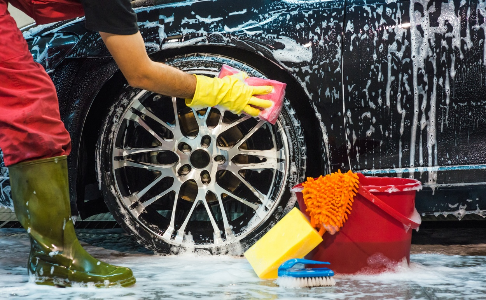
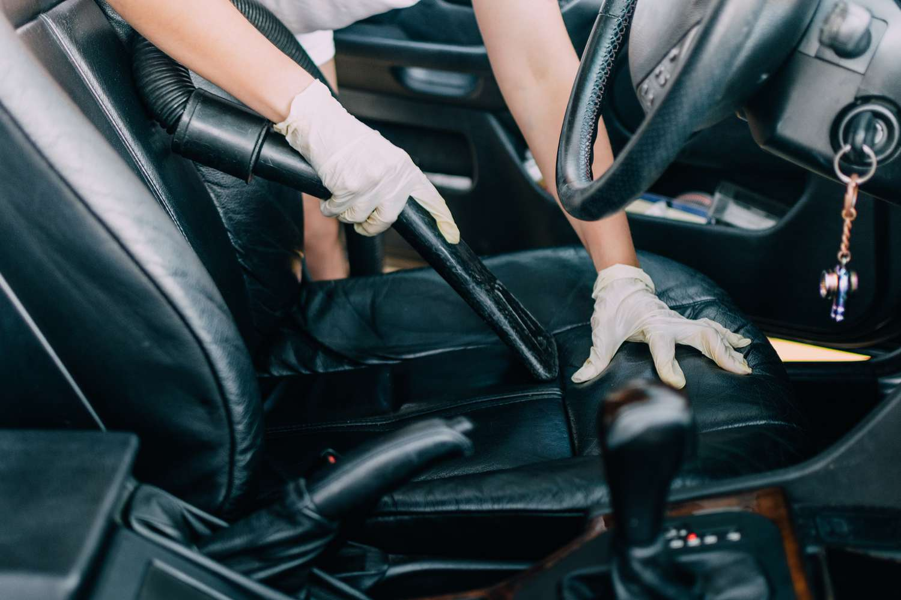
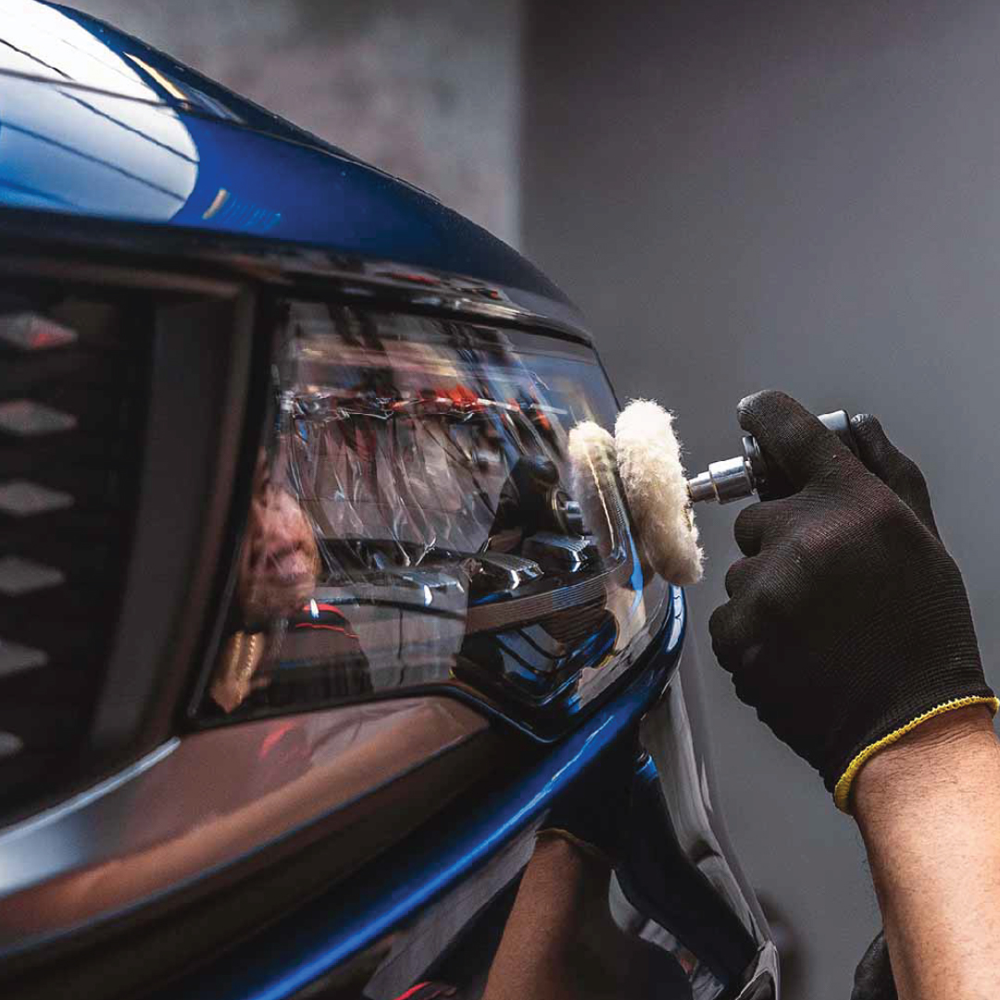
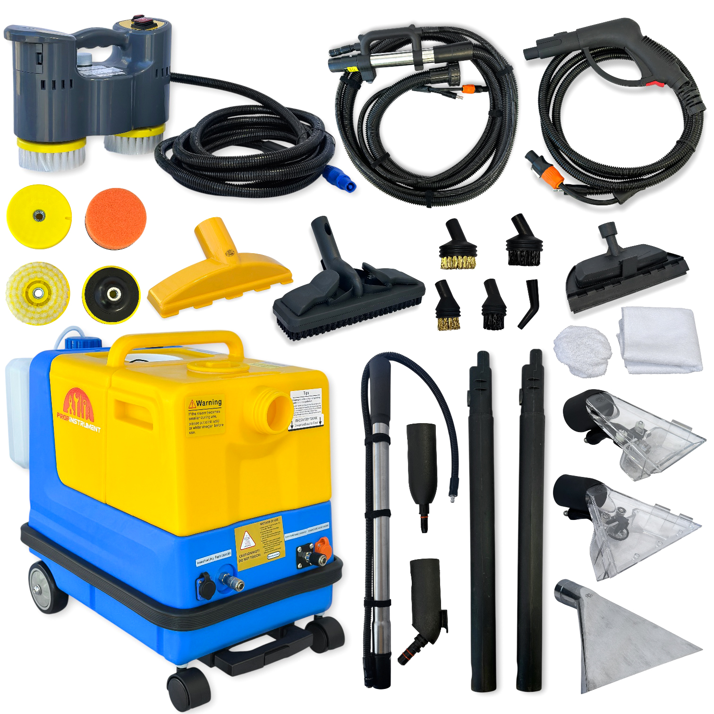
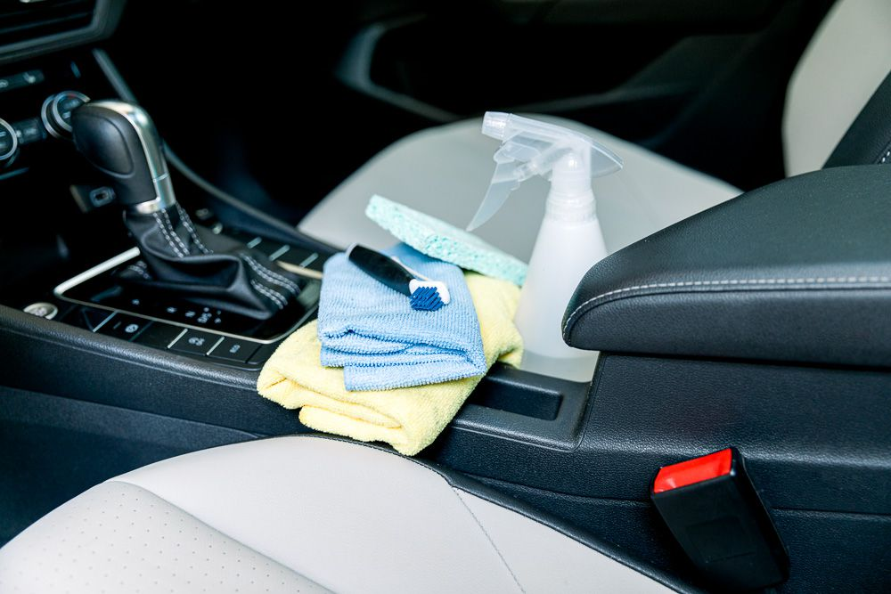

Наші види робіт

Полірування Авто
це процес відновлення та надання блиску лакофарбовому покриттю автомобіля за допомогою спеціальних полірувальних паст і машинок.

Зовнішнє миття
Професійне очищення кузова, скла, дзеркал і коліс автомобіля з наданням бездоганної чистоти та блиску. Для миття автомобіля використовуються сучасні професійні шампуні та спеціальні засоби

Хімчистка салона
це глибоке професійне очищення внутрішньої частини автомобіля від пилу, плям, неприємних запахів та інших забруднень із використанням спеціальних засобів і обладнання.

Реставрація фар
це відновлення прозорості та зовнішнього вигляду автомобільних фар шляхом шліфування, полірування та нанесення захисного покриття.

Комплекс робіт по клінінгу автомобіля
Комплексний клінінг автомобіля включає повне очищення та догляд за кузовом, салоном і всіма декоративними елементами авто. Послуга охоплює зовнішнє миття кузова, очищення дисків і колісних арок, прибирання салону, хімчистку сидінь і обшивки, очищення пластикових деталей, миття скла.

Інструменти
Для виконання ідеальної хімчистки вашого салона, використовуємо лише найкращі професійні інструменти
Блог
Поради щодо чищення автомобіля
Регулярно мийте автомобіль не лише для гарного зовнішнього вигляду, а й для захисту кузова від пилу, солі, смоли та інших забруднень, які можуть пошкоджувати лакофарбове покриття. Для найкращого результату рекомендується проводити комплексне миття кожні 1-2 тижні та періодично наносити захисний віск або керамічне покриття.

Деталізація має значення
Регулярний детейлінг допомагає захистити лакофарбове покриття від впливу ультрафіолету, дорожніх реагентів, бруду та дрібних подряпин, зберігаючи блиск і насиченість кольору кузова. Професійний догляд за салоном запобігає передчасному зношуванню матеріалів, появі плям і неприємних запахів. Завдяки цьому автомобіль довше залишається у відмінному стані та зберігає вищу ринкову вартість при подальшому продажу.